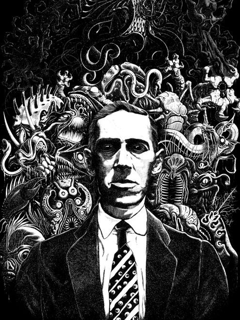

Info
Howard Phillips Lovecraft (* August 20, 1890 – + March 15, 1937) was an American writer of weird, science, fantasy, and horror fiction. He is best known for his creation of the Cthulhu Mythos.
Persona
For a long time, he was dominated by a panic fear of the dark. After his grandfather had walked around the house with him at night, he became nocturnal himself. He soon hated daytime activities. He preferred to study in the dark, walking through the streets of Providence by the light of lanterns. Lovecraft was a withdrawn, introverted person and fought his fears with the help of his literature
1916, Lovecraft published his first short story, "The Alchemist", in the main UAPA journal. Soon afterwards, he wrote "The Tomb" and "Dagon". "The Tomb", by Lovecraft's own admission, was greatly influenced by the style and structure of Edgar Allan Poe's works.
Becoming
an
author
very short extract from his bibliography
The Call of Cthulhu
Published in "Weird Tales" in 1928
"Call of Cthulhu" by H.P. Lovecraft is a horror story about an ancient cosmic entity, Cthulhu, that lies dormant beneath the ocean. Discovered through mysterious and horrific events, Cthulhu's awakening threatens humanity's sanity and existence, revealing the insignificance and vulnerability of humans in the universe.
The Colour Out of Space
Published in "Amazing Stories" in 1929
"The Colour Out of Space" by H.P. Lovecraft is a horror story about a meteorite that crashes on a farm, bringing with it a mysterious, colorless entity. This entity corrupts everything it touches, causing plants, animals, and humans to deteriorate and die, leaving the land barren and lifeless.
The Dunwich Horror
Published in "Weird Tales" in 1928
"The Dunwich Horror" by H.P. Lovecraft follows the Whateley family, whose son Wilbur is born under strange circumstances. Wilbur and his monstrous twin, spawned from dark rituals, terrorize Dunwich. After Wilbur's death, the invisible twin wreaks havoc until scholars from Miskatonic University intervene, ultimately banishing the creature.